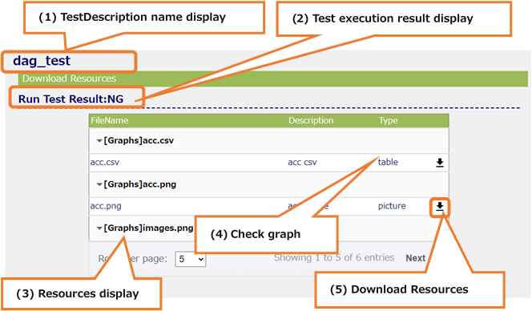

14.1. TestDescriptionDownload¶
Download Resources on the Test Description Detail screen of the transition source
14.1.1. All areas¶
All areas

(1) Submenu area
a. Sign-in information display
b. Language switching (Japanese / English)
c. Link to Inventories
d. Link to TestDescriptions
e. Link to TestDescriptionDetail
f. Link to MLComponents
g. Sign out
(2) Header area
a. Display the MLComponent name selected on the MLComponents screen
(3) Main area
a. TestDescription name display
b. Test execution result display
c. Resources display
d. Check graph
e. Download Resources
14.1.2. Main area¶
Main area

(1) TestDescription name display
TestDescription name that exists on the TestDescriptionDetail screen of the transition source is displayed.
(2) Test execution result display
The execution result of TestDescription existing on the TestDescriptionDetail screen of the transition source is displayed.
(3) Resources display
The graph of the test result of TestDescription is displayed.
(4) Check graph
It is possible to check graph.
(* See details 14.1.3)
(5) Download Resources
When the icon is pressed, it is possible to download the Resource of the pressed line.
14.1.3. Check graph¶
Check graph

(1) Select a line
Select a line whose format is “picture”, a graph is displayed below the table.
（Nothing is displayed even if you select anything other than “picture”）
(2) Graph display
Clicking on the graph, the graph is displayed in its original size in another tab